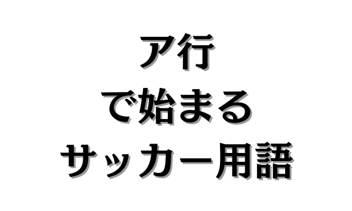
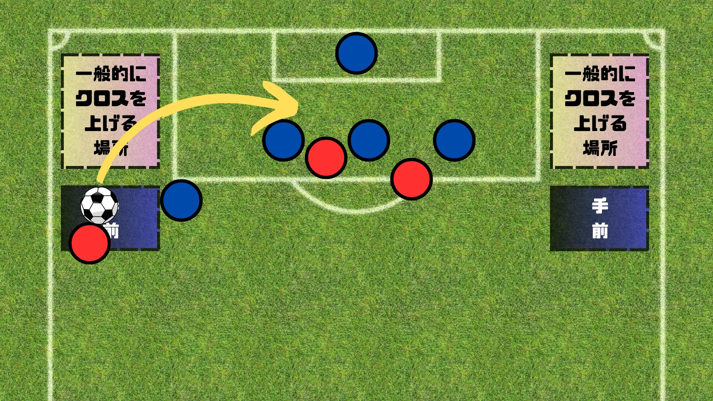
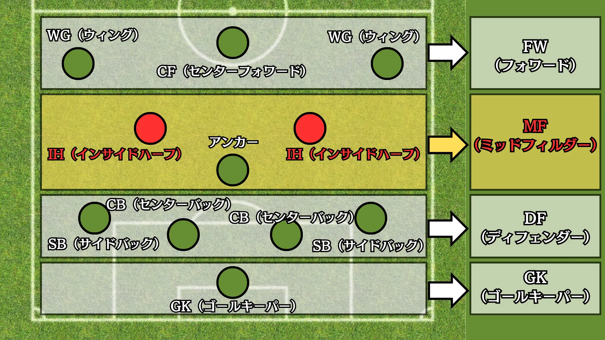
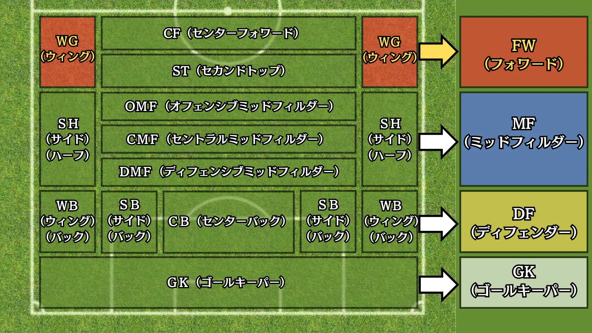
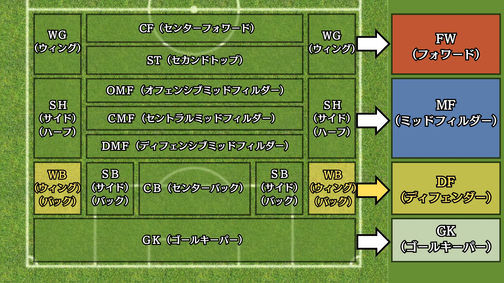
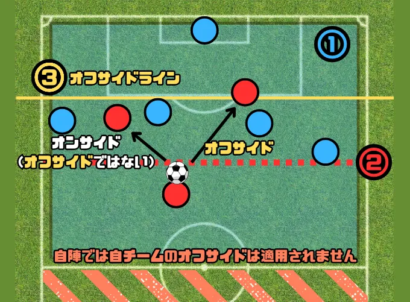

ア行で始まるサッカー用語


目 次
1. アで始まるサッカー用語。
アディショナルタイム【★】
アディショナルタイムとは、前後半それぞれの45分間のプレー時間に追加される時間のことです。
この時間は、試合中に発生した以下のような中断を補うために設定されます。
主な中断理由
・選手交代
・負傷による治療
・ゴール後の再開準備
・時間稼ぎ行為
・VAR（ビデオアシスタントレフェリー）のチェックや判定
アディショナルタイムの運用
・主審が試合中に中断時間を計測し、前半・後半の終了時にアディショナルタイムを設定します。
・アディショナルタイムの長さは、主審が判断し、ピッチサイドで掲示または口頭で説明します。
・実際のアディショナルタイムが過ぎても、プレー中であれば主審の判断で試合を続行します。
アーリークロス【★★】

アーリークロスとは、サッカーで使用される戦術の一つで、相手ゴール付近に早めにボールを送るクロスのことを指します。
（※クロスとは、相手ゴール前にボールを蹴ることを言います。）
2. イで始まるサッカー用語。
イエローカード【★】
イエローカードとは、サッカーにおける警告を示すカードで、主審が選手に対して提示します。
このカードは、選手がルール違反や非スポーツマン的な行為を行った場合に、罰として与えられます。
1試合で、イエローカードを2枚受けた場合は累積され、レッドカードに繰り上げられ、選手は試合から退場となります。
インサイドハーフ（IH）【★★★★】

IH（インサイドハーフ）とは、攻撃的なMF（ミッドフィルダー）の一種で、トップ下を２人配置する際のポジションです。
インサイドハーフ（IH）の代表的な選手は、デ・ブライネ（ベルギー代表/マンチェスター・シティ）やイニエスタ（元スペイン代表/元バルセロナ）などがいます。
（※トップ下とは、FW（フォワード）の直下に位置する１人のMF（ミッドフィルダー）のことです。）
インターセプト【★★】
インターセプトとは、相手選手がパスを出したボールを途中で奪い取るプレー、つまりパスカットのことです。
3. ウで始まるサッカー用語。
WG（ウィング）【★★★】

WG（ウィング）とは、FW（フォワード）の一種で、サイドアタッカーを役割とするポジションです。
WGは、wing（羽、翼）という英単語に由来しており、「両翼」という言い方もします。
WGの選手はサイドライン沿いを素早く駆け上がり、チームの攻撃に「羽ばたく」ような動きを見せることから、この名前が付けられたと言われています。
WB（ウィングバック）【★★★】

WB（ウィングバック）とは、DF（ディフェンダー）の一種で、サイドブロッカーを役割とするポジションです。
守備時は５バックの両脇として機能し、攻撃時は３バックを作ることでWB（ウィングバック）はより高い位置でプレーします。
4. エで始まるサッカー用語。
エラシコ【★★】
エラシコとは、ドリブルテクニックの一種で、アウトサイドで外側にタッチし、インサイドで内側に一瞬で切り返すテクニックです。
エラシコを発明したのは、元ブラジル代表のリベリーノ選手と言われていますが実際は、辛口のサッカー評論家として知られるセルジオ越後さんだということが分かっています。
➡セルジオ越後 発案「エラシコ」誕生秘話
5. オで始まるサッカー用語。
オフサイド【★】

オフサイドとは、攻撃側の選手が得点をするために、守備側のフィールド内で待ち伏せすることを防ぐために定められたルールです。
オフサイドになる条件とは？
＜タイミング＞
ボールホルダー（ボールを持っている人）がパスやシュートをした瞬間に、
＜位置＞
レシーバー（ボールを受ける人）が
①敵陣で
②ボールより前にいて
③オフサイドライン（後方から2人目の守備選手（1人目は大概キーパー））を超えている
時にオフサイドになります。
オフサイドにならない状況とは？
・オンサイド（オフサイドポジションにいない）でボールを受ける時
・自陣（ハーフウェーラインを超えない位置）でボールを受ける時
・オフサイドポジションにいてもプレーに関与していない時
・スローイン
・ゴールキック
・コーナーキック